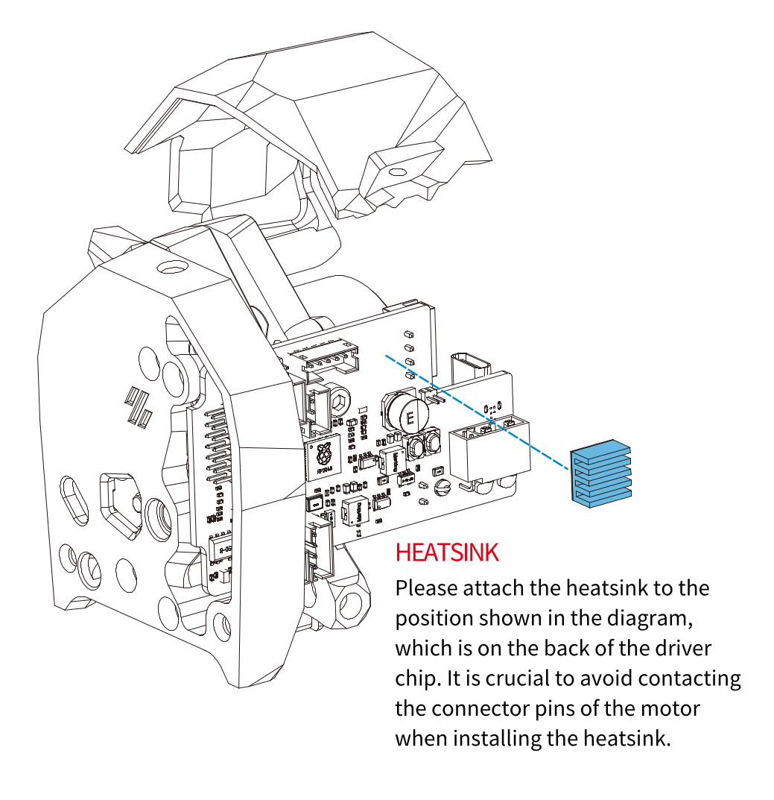
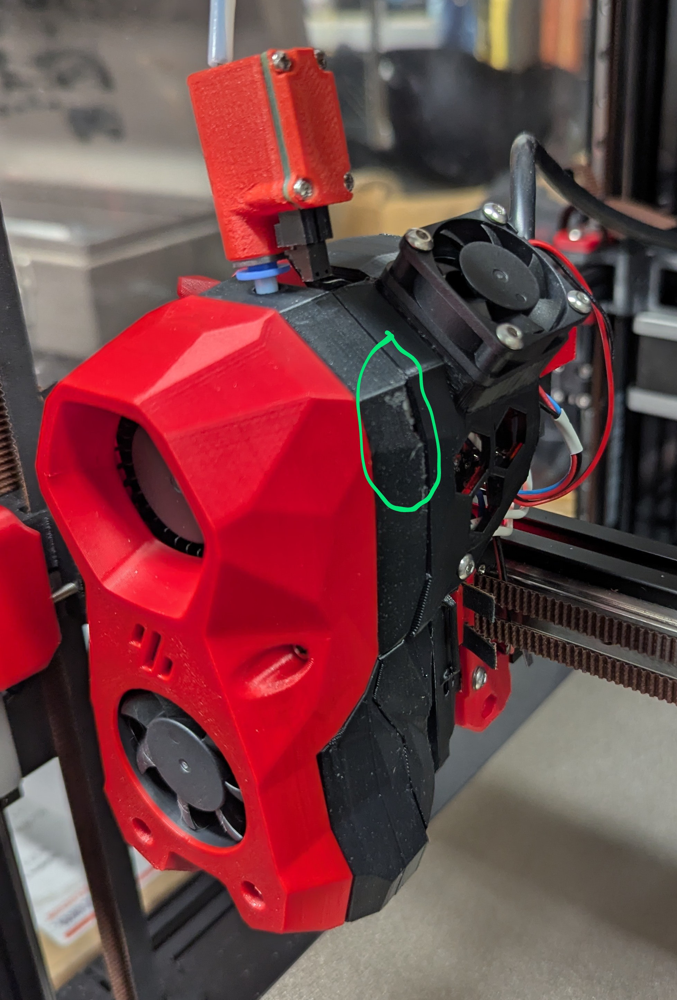
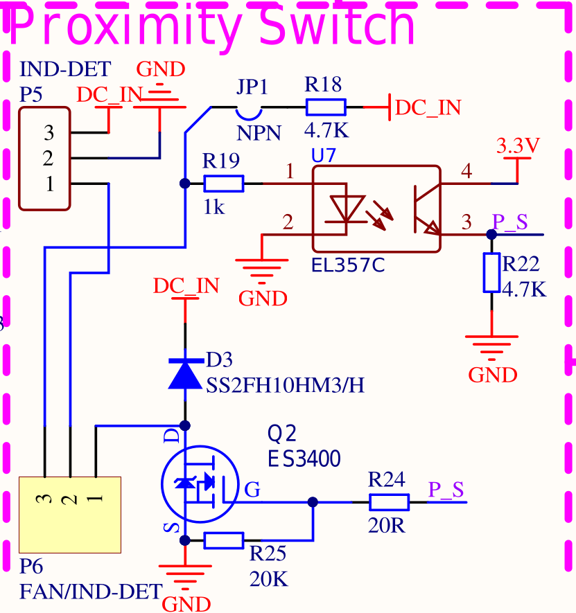
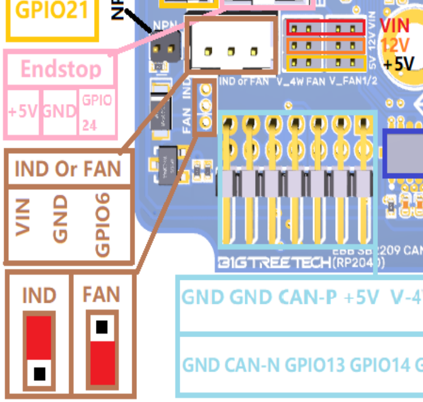
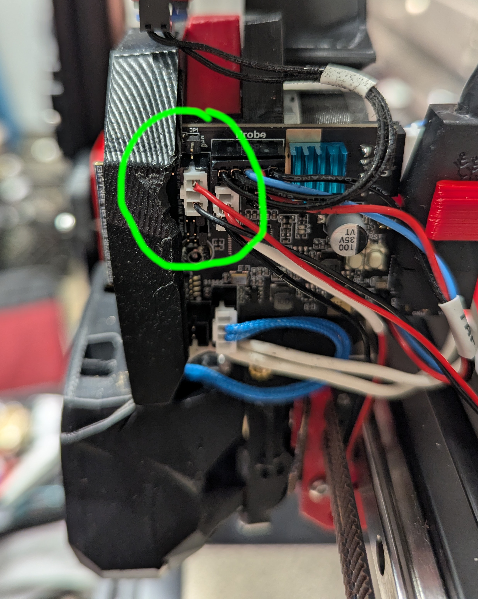

The fix
The solution is to improve the cooling of the EBB SB2209 CAN (RP2040) board.
The changes described below fixed my extrusion problem completely. The SB2209 temperature sensor now stays below 63 °C (approximately ~15 °C less than without the fix).
Heatsink
Make sure there's a heatsink on the SB2209 as shown on page 9 of EBB SB2209 CAN V1.0（RP2040）Build Guide_20240626.pdf.

Better Stealthburner cable door cover
Replace the Stealthburner "cable door cover" with an alternate part that has a fan mount and better ventilation.
I was using the stock Voron-Stealthburner cable_door_for_pcb.stl part, and I switched to a part called "Voron Stealthburner EBB SB2209/2240 fan cover" by Sven Kah, available here: https://www.printables.com/model/986553-voron-stealthburner-ebb-sb22092240-fan-cover
This cable door cover has holes for ventilation, and has a mount for a 30xx fan for forced air.
You may have to make a small clearance cut (e.g. with a rotary tool like a Dremel) to make room to install the SB2209 with the new fan connector pluggeed in.

I know that some folks use alternate Stealthburner parts promoted by BigTreeTech, if so you may have to find or design a different cable door cover to fit your toolhead. If you do, please open a PR to this repo with the details.
Fan
I'm using the 3010 24V Honeybadger axial fan from Fabreeko ($8): https://www.fabreeko.com/products/3010-performance-axial-fan
Any 30xx fan should work, just make sure you match the fan to the voltage available on the EBB SB2209 CAN (RP2040), which can be configured for 5V, 12V, or the board's supply voltage, 24V in my case.
The fan mounts pretty cleanly to the cable door cover, just threading the screws into the plastic. I used four M3x16 BHCS.
Other fans that people have recommended (i have no personal experience with these):
- Delta
- GDSTime
- NMB
- Noctua
- Orion
- Sunon
Wiring
Useful documents from BigTreeTech (thanks!) here: https://github.com/bigtreetech/EBB/
Specifically look at the drawings in EBB SB2209 CAN (RP2040)/Hardware.
  
We'll use the "IND or FAN" connector on the SB2209 (RP2040). It's a "PH2.0 3-pin" connector.
Add a jumper to P2 to set V_4WFAN to VIN (24V).
Add a jumper to pins 1 and 2 of P6 to select FAN mode (not IND).
We'll put a new connector on the existing fan wires, to connect to the fan header on the SB2209 board. The correct mating connector and crimp pins came with the SB2209. Cut the connector off the fan, leaving long enough wires. Strip the wire ends, crimp on the pins, and insert them in the connector (this part is a bit fiddly). The fan +24 wire will connect to P5 pin 3 (+24V), and the fan GND pin will connect to P5 pin 1 (a MOSFET controlled by GPIO6 that connects to ground).
You may need to make a small cut on the inside of the CW2 main_body.stl
part to make room for the fan connector.
Klipper config
[temperature_sensor sb2209_board_thermistor]
sensor_type: Generic 3950
sensor_pin: sb2209:gpio28
[temperature_sensor sb2209_mcu]
sensor_type: temperature_mcu
sensor_mcu: sb2209
[temperature_fan toolhead_fan]
pin: sb2209:gpio6
sensor_type: temperature_combined
sensor_list: temperature_sensor sb2209_mcu, temperature_sensor sb2209_board_thermistor
combination_method: max
maximum_deviation: 999.9
min_temp: 0
max_temp: 85
target_temp: 40
control: pid
pid_kp = 2
pid_ki = 5
pid_kd = 0.5
pid_deriv_time = 2.0
kick_start_time: 1.0
max_speed: 1.0
min_speed: 0.0